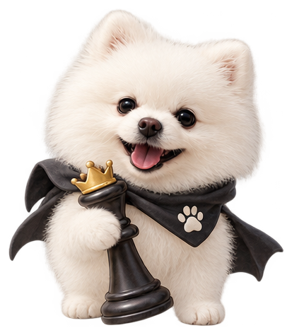
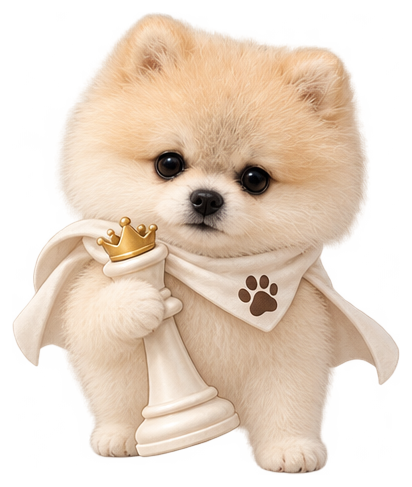

POM BOARD CLUB
오늘도 한 판?
단골 둘, 테이블 하나.
오늘의 승부를 골라보세요.


오늘의 테이블 5 GAMES · AI 대전
GOMOKU
게임 설정
돌과 AI 난이도를 선택하세요.
흑은 3-3, 4-4, 장목이 금수입니다.
NINE MEN’S MORRIS
세 개를 잇는 승부
각자 9개를 놓은 뒤 선을 따라 이동하세요. 세 개를 이으면 상대 말 하나를 제거합니다. 3개 남으면 자유 이동, 먼저 2승하면 매치 승리!
규칙과 향후 설정
mill 안의 말은 항상 보호됩니다. 제거 가능한 상대 말이 없으면 제거 없이 차례가 넘어갑니다.
90초 초과 처리와 10턴 교착 판정은 정의 확정 후 추가됩니다. 현재 시간 제한 및 교착 자동 패배는 적용하지 않습니다.
AI 대전 · 2선승 · 시간 제한 미적용
THREE LEVEL GOMOKU
한 층 더 깊은 승부
덮인 색을 기억하고,
다음 수의 높이를 생각하세요.
게임 방법
각자 25개. 기본 배치는 선 1개 → 후 2개 → 선 2개 → 후 1개입니다. 중앙과 내 돌에 인접한 점에는 기본 배치할 수 없습니다.
그 뒤 선공부터 번갈아 빈 점에 새 돌 하나를 놓거나, 내 최상단 돌 하나를 이웃한 점으로 옮깁니다. 스택은 최대 3층입니다.
이동 후 높이: 1층 → 2층만, 2층 → 1·2·3층, 3층 → 1·2·3층.
최상단 색으로 정확히 5목(6목 이상 제외), 내 3층 스택 5개, 또는 연결된 내 3층 스택 3개를 만들면 승리합니다. 동시에 성립하면 방금 둔 진영이 승리합니다.
최대 3라운드, 먼저 2승. 인접한 세 점은 직선·꺾임·삼각형을 포함한 연결 형태로 적용합니다. 최상단 돌만 이동할 수 있습니다.
후속 라운드는 직전 패자의 선택을 수동으로 입력합니다(AI가 패자여도 사용자가 대신 선택). 합법수가 없는 경우는 앱의 임시 규칙으로 무승부 후 같은 라운드를 다시 진행합니다.
빈 곳을 누르면 놓기 · 내 돌을 누르면 이동
직전 패자의 선후공 선택을 수동으로 입력하세요. AI가 패자일 때도 대신 선택합니다.
85개 교차점 · 최상단 색으로 승부 · AI 대전
CARD CHESS
다섯 장으로 여는 길
카드를 돌려 쓰며 상대 성을 차지하세요.
게임 방법과 카드 규칙
각자 말 5개로 시작합니다. 후공이 자기 카드 2장, 선공 카드 2장을 정하면 남은 1장은 대기존에 놓입니다.
카드 → 내 말 → 목적지 순으로 누르세요. 사용한 카드와 대기 카드가 서로 바뀝니다. 아군 칸에는 착지할 수 없고 적군 칸에 착지하면 포획합니다.
룩: 상하좌우 1칸. 비숍: 대각선 1칸. 어태커: 말의 화살표 방향으로 1·2칸 또는 앞 대각선 1칸. 2칸 전진할 때 중간에 말이 있으면 갈 수 없습니다.
나이트: 가로 2칸·세로 1칸 또는 가로 1칸·세로 2칸을 뛰어넘습니다. 점퍼: 8방향의 인접 말 하나를 넘어 같은 방향 2칸 떨어진 곳에 착지합니다. 뛰어넘은 말은 그대로 남습니다.
전체 말이 2개가 되는 즉시 점퍼가 퀸(8방향 1칸)으로 바뀝니다. 말은 진행 방향의 끝줄에 도착하면 반대 방향을 봅니다. 어태커 그림은 위를 보는 말 기준입니다.
상대 말을 모두 잡거나, 상대 성에 들어간 말이 상대의 다음 한 턴이 끝날 때까지 살아 있으면 승리합니다. 한 세트로 진행합니다.
합법수가 없는 경우는 제공 규칙에 없어 승패·패스를 임의로 정하지 않고 진행을 멈춥니다. 다시 하기나 설정으로 이동할 수 있습니다.
AI 카드
대기 카드 ↻
내 카드 · 선택한 카드를 다시 누르면 취소
▲ ▼ 말의 전진 방향 · ♜ 성
카드 선택 → 빛나는 내 말 → 목적지
QUORIDOR · THE FINAL TABLE
작은 발걸음, 큰 작전.
길을 내거나, 길을 막거나.
강아지를 반대편 끝줄까지 데려가세요.
게임 방법
9×9 보드에서 BLACK은 아래 중앙, WHITE는 위 중앙에서 시작합니다. BLACK 선공, 각자 벽 10개. 한 차례에 말 이동 또는 벽 하나 설치 중 하나를 선택합니다. 반대쪽 끝줄 아무 칸에 먼저 도착하면 승리합니다.
상하좌우 한 칸 이동하며 벽은 통과할 수 없습니다. 상대가 바로 앞에 있고 그 뒤가 열려 있으면 직선으로 뛰어넘습니다. 상대 뒤가 벽이나 가장자리로 막힌 경우에만 상대 옆으로 돌아갈 수 있습니다. 일반 대각선 이동은 금지합니다.
벽은 가로 또는 세로 두 칸 길이입니다. 겹치거나 교차할 수 없으며 두 강아지가 도착할 길을 적어도 하나씩 남겨야 합니다. 벽을 모두 쓰면 이동만 가능합니다.
내 강아지를 누르면 이동 가능한 작은 점이 나타나며, 점을 누르면 이동합니다. 칸 사이 가로·세로 틈을 누르면 벽 미리보기가 고정되고, 같은 위치를 한 번 더 누르면 설치됩니다. 다른 틈을 누르면 벽 위치가 바뀌고, 내 강아지를 누르면 이동 선택으로 돌아갑니다. 붉은 벽은 설치할 수 없습니다.
↑ BLACK 도착 줄
WHITE 도착 줄 ↓